6 Grammar Graphics
6.1 Learning objectives
- Incorporate the pipe operator (|>) to streamline data manipulation and plotting workflows.
- Explore the principles of the Grammar of Graphics with the
ggplot2package. - Utilize the
ggplot()function to create visualizations, defining the dataset, mapping variables to aesthetics, and defining geometric objects. - Improve visualizations with labels, scales, color palettes.
This semester we will learn how to make different types of visualizations to explore our data.
Start your workflow by uploading the tidyverse package which contains the ggplot functions:
We will consider the built-in dataset quakes again. It contains information about earthquakes occurring near Fiji islands since 1964. To refresh our memory, let’s take a look:
6.2 1. The pipe
The pipe |> is a very important operator to build on code:
# Filter a dataframe
filter(quakes, depth > 300)
# Equivalent to piping quakes into filter()
quakes |>
filter(depth > 300)We will use the pipe constantly for different reasons:
6.3 2. Create a ggplot
6.3.1 a. Define a plot
The ggplot() function helps us build a graph. Within this function, we specify the dataframe to explore:

Well, it’s empty because we haven’t specified how to represent the variables in the quakes object…
6.3.2 b. Add a geometric object
The geom_...() functions helps us define how to represent the variables with geometric objects (points, lines, bars, etc.). For example, geom_point() can represent our data with points:
Well, it does not work because we haven’t specified which variables to represent… Using aes(), aesthetics, we can define the mapping of the variables to each aesthetic of the plot. We can either define the aesthetics for each geometric object or for the whole plot:
# Create a ggplot with mapping variables to a geometric object
ggplot(data = quakes) +
geom_point(aes(x = long, y = lat))
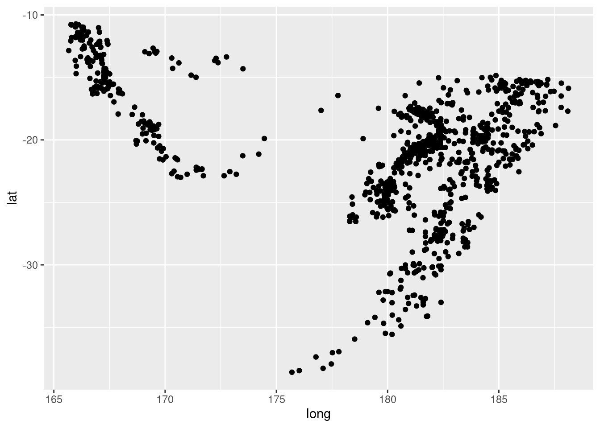
In the next worksheet, we will explore additional types of geom (geom_histogram, geom_boxplot, geom_bar, …) and discuss which ones are appropriate for different types of variables.
6.3.3 c. Map to color, shape, size
We can change the appearance of some characteristics of the geometric object.
# Coloring points, making them bigger
ggplot(data = quakes, aes(x = long, y = lat)) +
geom_point(color = "blue", size = 4)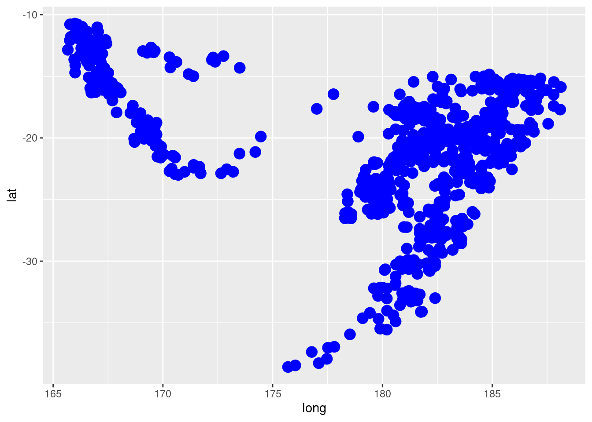
Other common options include fill, shape, and alpha.
6.3.3.1 Try it! In the code below, input different values between 0 and 10 for shape and alpha. What do these options control?
# What does shape vs size vs alpha do?
ggplot(data = quakes, aes(x = long, y = lat)) +
geom_point(shape = 0.5, alpha = 0.5)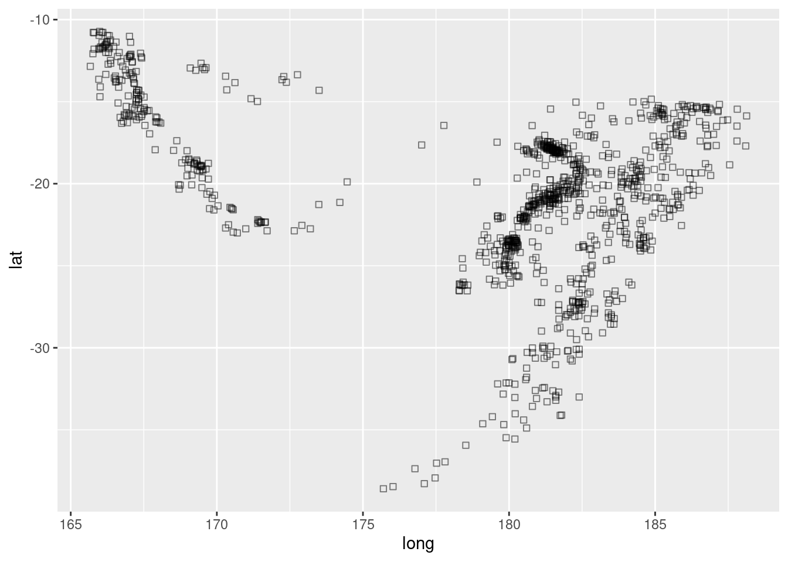
The option of shape controls the shape of the points while alpha controls the transparency and only varies between 0 and 1.
6.3.4 d. Map variables to color, shape, size
More importantly, we can change the appearance of some characteristics of the geometric object depending on the values of some variables, inside the aesthetics. For example, let’s control the size of the points by the magnitude of the earthquake:
# Map the size to the mag variable
ggplot(data = quakes, aes(x = long, y = lat, size = mag)) +
geom_point()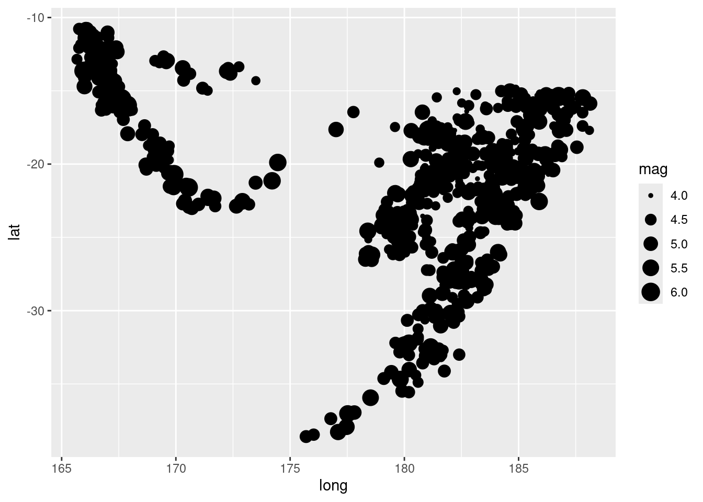
6.3.4.1 Try it! Instead of differentiating the earthquakes based on the size of the magnitude, change the color of the points based on depth. Anything you notice in this graph?
# Map the color to the depth variable
ggplot(data = quakes, aes(x = long, y = lat, color = depth)) +
geom_point()
Earthquakes with similar depth tend to be at similar locations.
Compare your plot to the following plot that considers depth as a categorical variable instead:
# Use a pipe to apply a function to the object quakes
quakes |>
# Pipe into mutate: no need to repeat the name of the dataframe
mutate(depth_cat = ifelse(depth > 300, "Deep", "Not deep")) |>
# Pipe into ggplot: no need to repeat the name of the dataframe
ggplot() +
# Define geom and aesthetics
geom_point(aes(x = long, y = lat, color = depth_cat))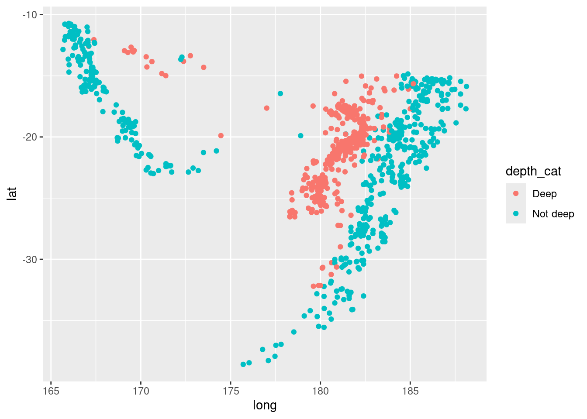
How does the legend of color differ from before?
When the depth is a numeric variable, the scale is called continuous with a gradient of blue colors. When the depth is a categorical variable, the scaled is called discrete with distinct colors for each category.
6.4 3. Layering
We can add many layers to the ggplot and it is a good practice to put the new layers on a new line (be sure to end a line with +).
6.4.1 a. Add labels and controlling scales
Plots should be easy to interpret and informative labels are a key element in achieving this goal. The labs() function provides customized labels for titles, axes, legends, etc.:
# Build a plot...
ggplot(data = quakes, aes(x = long, y = lat, color = depth)) +
geom_point() +
# ...and add labels
labs(
# Title
title = "Distribution of the depth across the trenches",
# Subtitle
subtitle = "For eathrquakes that occurred near the Fiji Islands since 1964",
# Caption with source of data
caption = "Data obtained from Dr. John Woodhouse, Dept. of Geophysics, Harvard University",
# Label x-axis and y-axis
x = "Longitude",
y = "Latitude",
# Legend of color
color = "Depth (km)")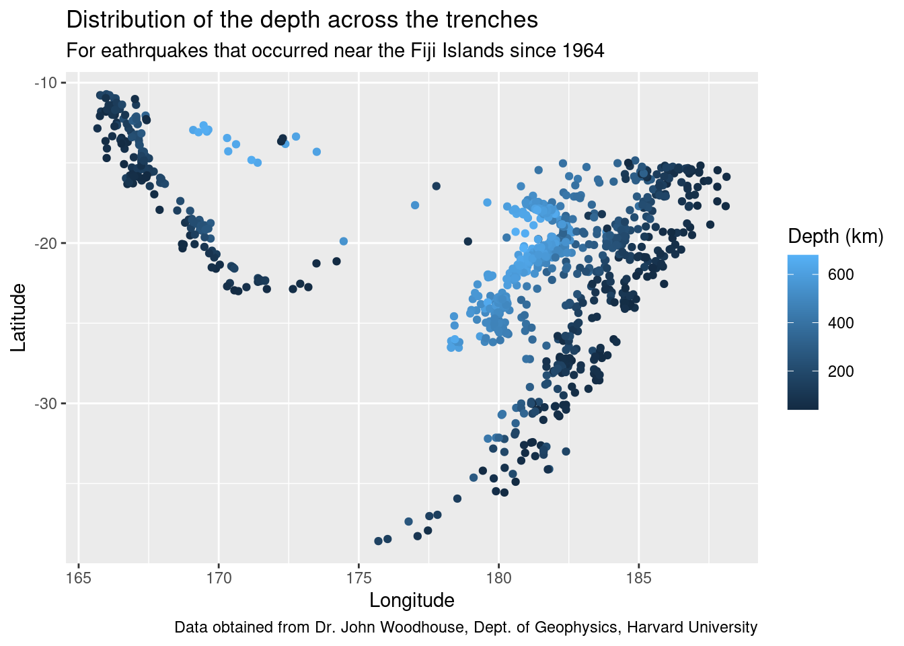
6.4.2 b. Control scales
We can also change the scales (tick marks) for a better readability with functions starting with scale_:
# Build a plot...
ggplot(data = quakes, aes(x = long, y = lat, color = depth)) +
geom_point() +
# ...and adjust scales
scale_x_continuous(limits = c(160,190), breaks = seq(160, 190, 2)) + # enforce limits between 160 and 190, show tick marks every 2 degrees
scale_y_continuous(limits = c(-40,-10), breaks = seq(-40, -10, 5)) # enforce limits between -40 and -10, show tick marks every 5 degrees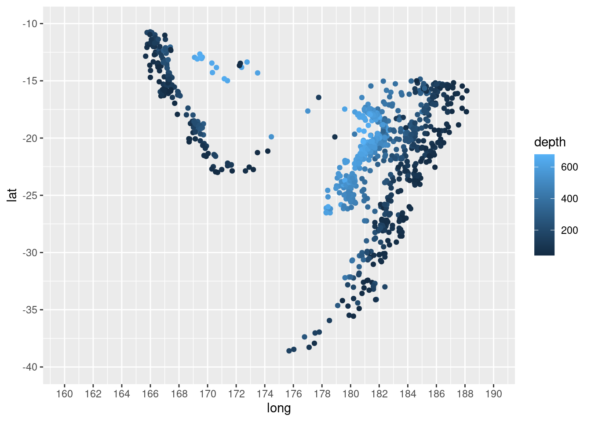
6.4.3 c. Facet
Faceting reproduce a graph for each level of another variable (or combination of variables). Let’s take a look at the map for three categories of depths:
quakes |>
# Create a variable called depth_cat
mutate(depth_cat = case_when(
depth <= 70 ~ "Shallow",
depth > 70 & depth <= 300 ~ "Intermediate",
depth > 300 ~ "Deep")) |>
# Create a plot
ggplot() +
geom_point(aes(x = long, y = lat, color = depth_cat)) +
# Facet by depth category
facet_wrap(~depth_cat)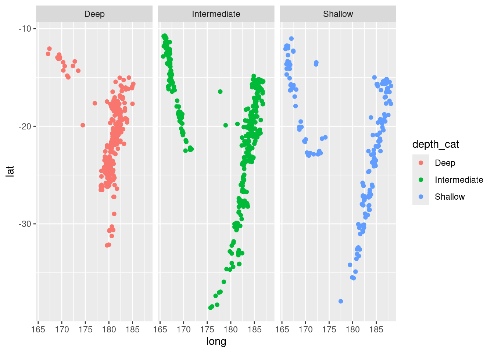
6.4.4 d. Color palettes and themes
We can customize many aspects of our graphs by hand (colors, scales, background color, grid, …) or we can use some themes or palettes other than the defaults.
To define our own palette of colors for numeric values, we can use scale_color_gradient() with setting the color for low values and another color for high values:
# Compare values of magnitude (low: not too dangerous, high: more dangerous)
ggplot(quakes, aes(x = long, y = lat, color = mag)) +
geom_point() +
# Change the color palette
scale_color_gradient(low = "yellow", high = "darkred")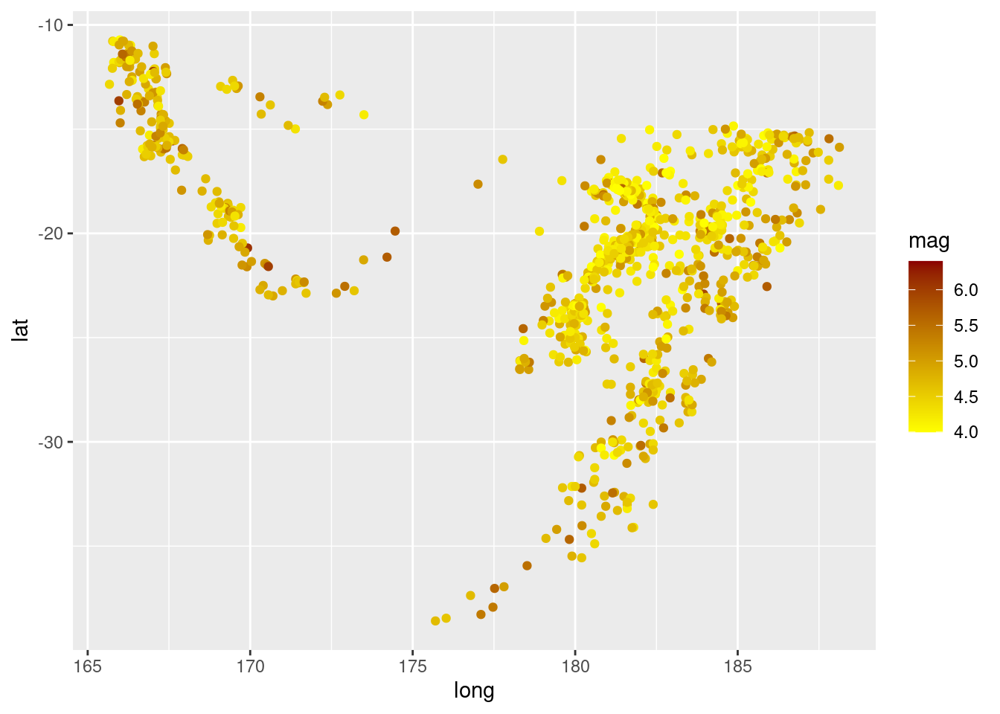
6.4.4.1 Try it! Display the depth of earthquakes depending on their location and choosing an appropriate color palette.
# Compare depth with small values represented in light color and high values in dark
ggplot(quakes, aes(x = long, y = lat, color = depth)) +
geom_point()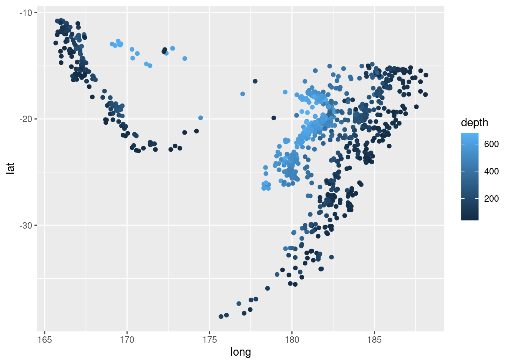
# Compare depth with small values represented in light color and high values in dark
ggplot(quakes, aes(x = long, y = lat, color = depth)) +
geom_point() +
# Change the color palette
scale_color_gradient(low = "lightblue", high = "darkblue")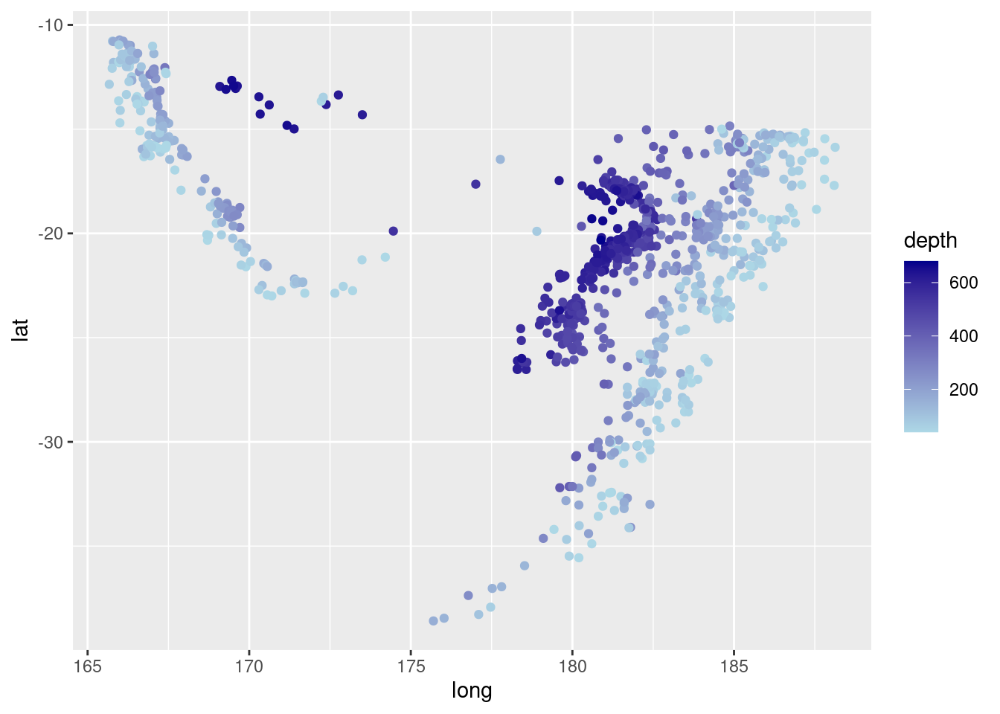
The first visualization is not intuitive: small values of depth should be represented in light color and high values in dark to match our intuition.
Here is a list of some of the discrete palettes that are color-blind friendly:
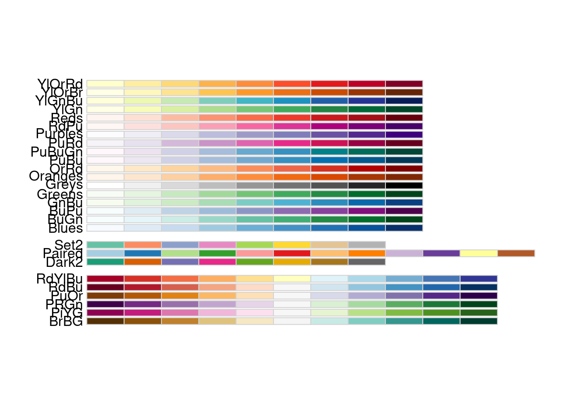
We can use scale_color_brewer() when we are mapping a categorical variable to the aesthetic color =:
quakes |>
# Create a variable called depth_cat
mutate(depth_cat = case_when(
depth <= 70 ~ "Shallow",
depth > 70 & depth <= 300 ~ "Intermediate",
depth > 300 ~ "Deep"
)) |>
# Compare categories of depth
ggplot(aes(x = long, y = lat, color = depth_cat)) +
geom_point() +
# Change the color palette
scale_color_brewer(palette = "Set2")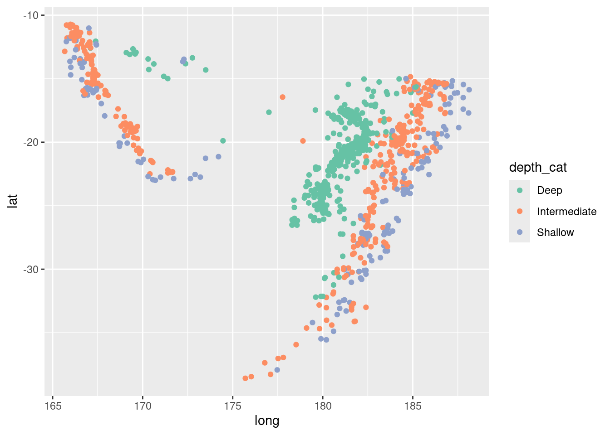
Explore and choose color palettes for categorical data using this website: https://colorbrewer2.org/
6.4.5 e. Themes
There are so many adjustments we can make to our ggplot (change background color, color of axis, color of font, …) and sometimes it is easier to use some predefined themes:
# Still same plot
ggplot(quakes, aes(x = long, y = lat, color = depth)) +
geom_point() +
# Use the default theme_minimal()
theme_minimal()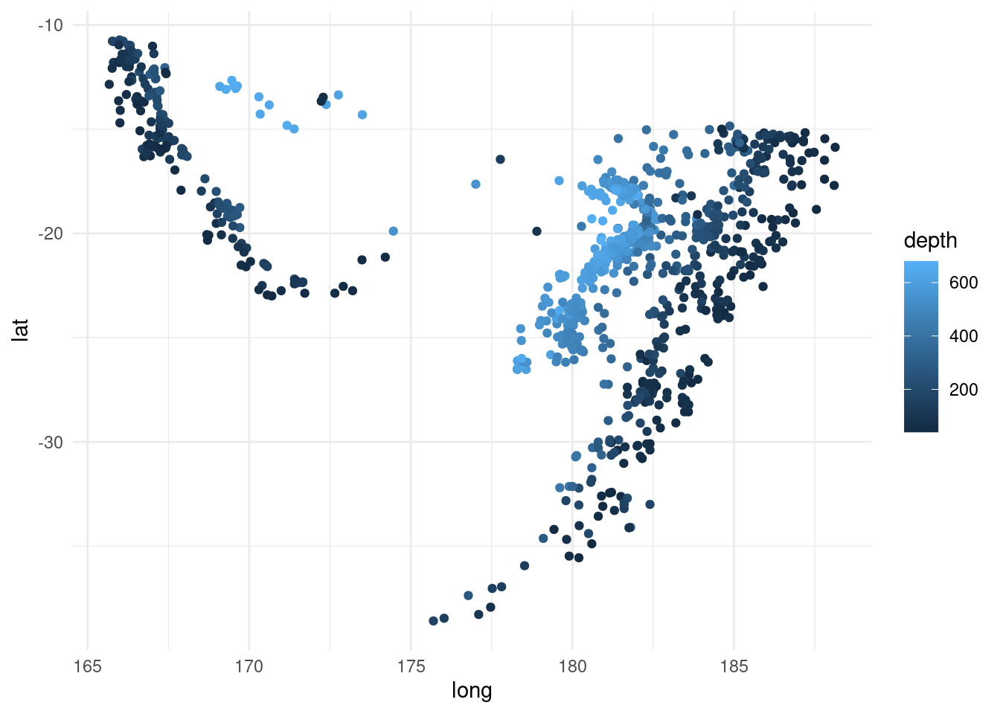
Visit this website to find a list of all themes available: https://ggplot2.tidyverse.org/reference/ggtheme.html
Next, we will learn different geometric objects to represent different types of data!
6.5 Recommended Resources
- Worksheet keys are posted at the end of the week on Canvas under Programming Tools.
- Recommended readings: Introduction to data visualization, ggplot2
- Data visualization with ggplot2 :: Cheat Sheet